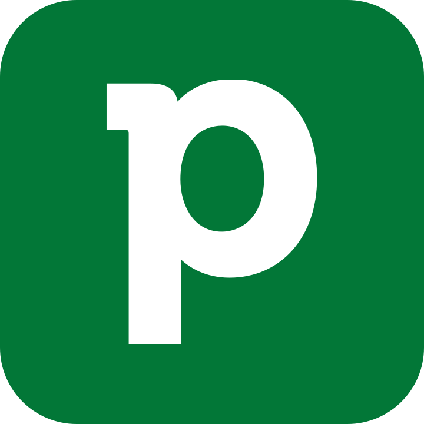
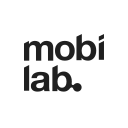

Tartu Jaan Poska Gymnasium
Teacher (Dec 2018 – Feb 2019)
Teaching web design as a voluntary subject at Tartu Jaan Poska Gymnasium.
Principal product designer with 9+ years of experience specialising in design systems, mobile design, and cross‑platform development. Experienced in leading teams to create cohesive, scalable end‑to‑end design solutions that align with business objectives.
Proven track record of implementing design strategies that improve user experience and drive product innovation, including Pipedrive's feature discovery strategy.

Sales CRM (Mar 2020 - now)

UX design agency (Aug 2017 - Feb 2020)
During my time at Mobi Lab I created iOS and Android apps for industries like fintech and edtech. Apart from native apps, I also created web designs for the entertainment industry, built augmented reality solutions and an interface for a boat alarming and monitoring system. I created handovers to clients with presentations, CVIs and design systems.
Teacher (Dec 2018 – Feb 2019)
Teaching web design as a voluntary subject at Tartu Jaan Poska Gymnasium.
Art director (May 2015 - Aug 2019)
Corporate visual identity for the concert venue Kalju‑lava, including print and web design.
Applied higher education (2014 – 2018)
Media and advertisement design.
Graduation thesis "Improving User Experience in the Example of Baltic Workboats Project", praised by the committee.
Multimedia designer AP (2012 – 2014)
Multimedia design and communication.
From peer and manager feedback.
First, as her teammate and now her manager for over a year, I have literally never seen Margit overwhelmed or heard her complain about the workload, although she's constantly involved in multiple projects across Mobile and Web app. Nor have I ever heard anyone else complain, as a matter of fact, 100% of the feedback from 2022 has been the polar opposite. Margit just delivers, always!
You were the core designer for the project. Not gonna lie, kinda hard to put it into words, it's like, without you, there wouldn't have been the project. Sure, others could fill in, but I believe having ability to work with you in the same room unlocked our velocity.
Proposing data-driven counterarguments to top-down micromanagement, please continue, it's amazing. Info you had from user reviews creating some basis for why we are building such an experiment also helped a lot.
You are an amazing discussion partner and always happy to go into details. We've gotten a lot of feedback in how cool the new experiment looks, and this is all thanks to you. You put a beautiful face to the functionality that we are able to proudly ship. And again, it is so easy to come to you with ideas (of various quality) and you are able to sort out higher quality ideas from optional ones.
I think you've been on top of all the tasks and able to deliver on your promises. You keep up the positive team spirit which I find very important. You are always super approachable and fast to reply whenever needed. Whenever thinking through flow you are able to reason the proposed solution.
There's never been a doubt that you produce high quality work, but this time officially working with you for the first time, I'm quite happy how you approached progress over perfection with the UX and UI of the Agentic Onboarding experience. You've been resilient with the process despite many opinions. I think it hasn't been easy and the fact that we've finally landed on something solid is because you've been able to navigate many senior stakeholders' expectations and pushing through, while communicating with grace! Thank you!
Margit doesn't just show up to observe research sessions — she engages with the research process fully, at every step, and contributes meaningfully throughout rather than simply sitting in to observe. She also has a strong ability to synthesize what she's hearing: after just a handful of customer interviews, she can clearly identify what worked, what didn't, and what should change for the next iteration. That's a harder skill than it sounds, and she does it consistently. And she's also particularly good at picking up on unspoken signals — hesitations in moderated tests that aren't said outright but still matter.
Margit has a natural instinct for pushing past convention and the norm. Where others might accept the current version of something as sufficient, she builds prototypes that feel genuinely forward-looking — which matters a lot for a tech company that needs to keep pace with where technology is heading. She helps push the team forward rather than settling for what already exists. We need more Margits at our company 😊
Margit brings a rare combination of composure and rigor - calm, measured, and always prepared. She's a strong role model for how design work should be done, and sets a high bar simply by example. Working with her is something I always look forward to.
You brought real clarity to the design process in a way that made cross-functional collaboration genuinely easy, and your ability to translate research insights into actionable design decisions kept the team aligned and moving forward without unnecessary back-and-forth. That bridge between user needs and product output is something she should absolutely keep doing.
Working with you gave me a much closer look at the impact that research and design have on a product's success. The customer interviews we conducted together were particularly valuable, and that experience has directly shaped how I think about partner and customer conversations going forward. Looking forward to working with you again!
One thing that stood out is the quality of your design deliverables in Figma. They are really well organised, with different flows clearly separated, and with in depth details about all the different states the user experience can have. You also have a great way of tagging the designs that are ready for development, and the ones that are under construction. As an engineer picking up your designs for implementation is smooth sailing, and with AI tools like Claude, since the designs are so well documented with high quality context, the output from AI in code is also much better.
During the mission, even with many other initiatives on your plate, like going out of the mission for a full week for a design sprint, you always kept the team unblocked with a great buffer of design deliverables ready. You never missed a beat.
You've had a huge drive to experiment with AI tools, specifically implementing frontend tasks in code like a developer, and you have already shipped code to production - using figma make/sites first, and later deploying code in our front-end React repository. I think it would be really cool for you to keep exploring this way of working. By doing this, you are helping our team build more features faster, and you can take the learnings to help other non technical roles to have the same impact you are having.
Although we've only worked together occasionally on a project basis, I've found our collaboration to be smooth and effective. You bring a focused and thoughtful approach that makes working together easy, even within limited timeframes.
In workshop settings, you often offer valuable perspectives and raise questions that others may have missed. Those “what about that?” moments help the team think more broadly and critically. You contribute in a balanced way - listening attentively and speaking up when it adds value, without dominating discussions. Your presence is respectful and helps create a productive environment.
I also appreciate your reliability. You follow through on your commitments and help keep things moving without delay.
Thanks for the collaboration! it's been a positive experience working with you, and I look forward to crossing paths again on future projects.
I think you have really levelled up this year. First, you were a key driver of the tribe set-up, aligning stakeholders and helping craft the vision for and with us.
Second, you've carried a strong global experience and systemic mindset through several initiatives: again being the key driver when we were defining the AI vision through multiple iterations and complexities, working in ambiguity for experiences that don't even exist yet. You've initiated and led multiple design sprints like feature discovery design sprint, the automations design sprint focusing on AI experiences, and the Pulse design sprint focusing on improving the overall experience. This shows the variety of skills what you have but also results in actual outcomes whats expected from the tribe and your level as a designer.
Additionally I know you've been working super hard on multiple experiments for our feature discovery goals. A big and important topic set for our tribe but actually something that is a challenge for every software company, I know it can't be an easy task but I believe every step we take to solve it globally and systematically takes us at least 1% closer to the end goal of improving it.
All this work has made your work and impact more clear to the whole org and pulled more people and tribes into closer collaboration.
I really appreciate the balance you strike - you're not overly talkative, but you always show up at the right moments in discussions and contribute meaningfully when it matters. I also admire the way you take initiative in preparing and facilitating workshops; it's clear you put thought and care into making them effective and engaging.
You collaborated very openly throughout the project. Whenever you had hesitations or questions, you surfaced them early and invited the team to think through them with you, which created a healthy problem-solving environment. You were also very receptive to others' ideas, listening actively and asking thoughtful questions when needed. Overall, our collaboration during the use case felt smooth, transparent, and easy.
Your impact was clear from the beginning. I consistently felt like I was working with a highly experienced designer who could think through the experience end-to-end. One example that stood out was your continual reminder to consider the mobile experience - even though the use case primarily lived on web. That kind of holistic thinking elevated the quality of our discussions and helped the team keep the full user journey in mind.
You have this great balance of being open, supportive, and direct when needed. I'm lucky to learn from you!
You bring a fresh, alternative perspective that always expands the team's thinking. I really appreciate how you ask deep, thoughtful questions, they influence the direction of the work in the best possible way and help us see things we might otherwise miss.
You're already showing as a strong design leader. I would love working under your leadership.